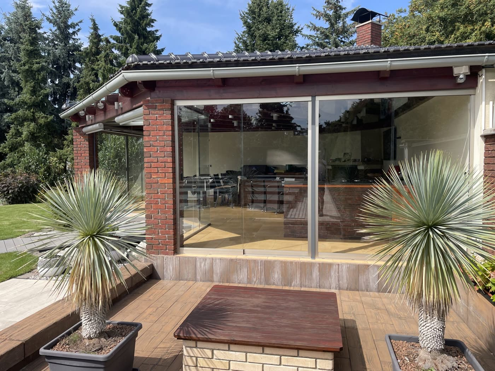
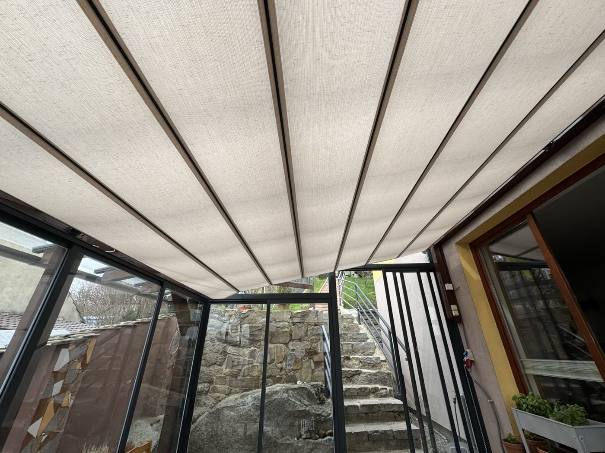
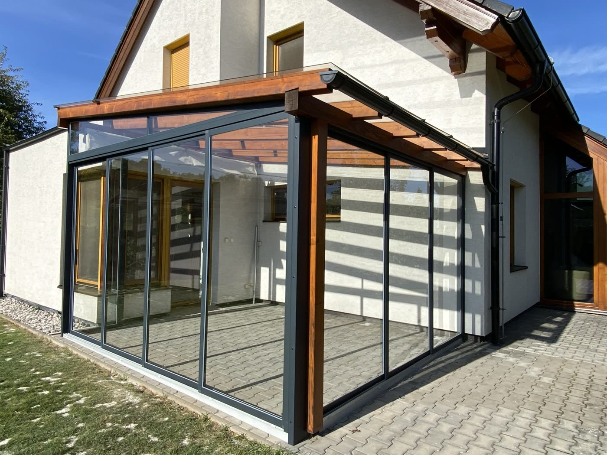

Patio Living Move 3.0
Bezrámový systém v nové generaci 3.0 má vylepšené podvozky s dvojitými kolečky a umožní širší a těžší panely.
Zasklení teras: varianty a realizaceSystémy, které montujeme, naživo. Vyberte oblast, která vás zajímá.

Bezrámový systém v nové generaci 3.0 má vylepšené podvozky s dvojitými kolečky a umožní širší a těžší panely.
Zasklení teras: varianty a realizace
Rostislav Karásek ukazuje temperovanou zimní zahradu s izolačním dvojsklem a konstrukcí s přerušeným tepelným mostem.
Zimní zahrady: varianty a realizace
Hliníková pergola, u které je kování i kotvení ukryté, aby působila čistě a elegantně.
Pergoly: varianty a realizace
Markýza ARESBOX z naší nabídky stínění.
Stínění: varianty a realizace
Rámové posuvné zasklení Combi v antracitu, které promění dřevěnou pergolu v obytný prostor.
Zasklení teras: varianty a realizace
Zákaznice vypráví o své zimní zahradě. Další recenze
Zimní zahrady: varianty a realizaceV této oblasti zatím žádné video nemáme. Ukázat všechna videa
Napište nám, nebo zavolejte +420 777 727 328. Showroom Nemanická 5, České Budějovice, Po–Pá 8–16.